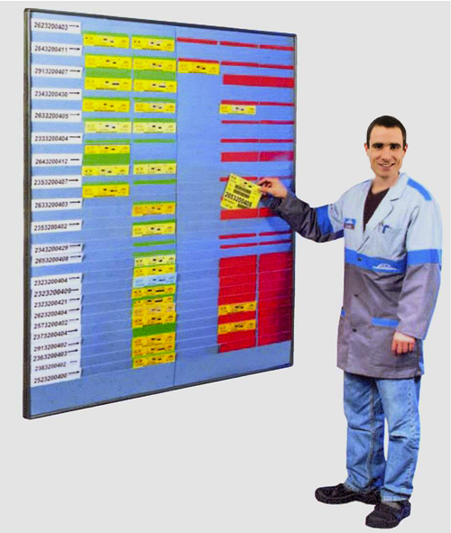
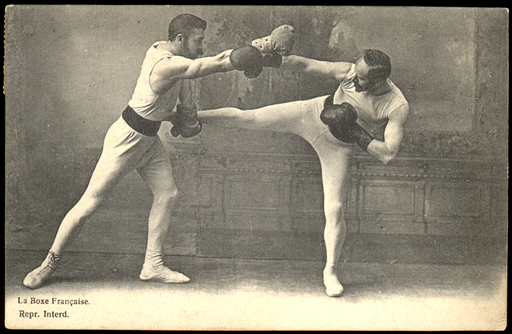

Demain c'est :
Comment bien construire son Kanban ?
Des couleurs criardes, d'horribles cartons qui ne collent même pas et surtout une blouse trop grande...
Non, tu ne veux pas d'un kanban "So 2010" à la IHE !
(N'hésite pas à télécharger l'image pour mieux voir)
|

|
Workflow, stock, tâche, Definition of Done, que mettre en place et surtout comment ?
Un kanban c'est comme une copine, c'est bien quand on s'en sert... (BEG)
C'est demain 12h30 en salle poly !
Après 15 minutes d'introduction via un quickie de JSC, nous parlerons du kanban dans un format open-space / BBL.
Le but étant de sortir un A4 synthétisant les meilleurs tips & tricks.
What else ?
|
Tu peux toujours décider de l'avenir de l'école du Tech-Lead :
Vote ! Pour les prochains sujets abordés.
|
|
|

|
Les comptes rendus :
- la revue de code
- la rétrospective technique :
Still in progress...
- le reporting au client :
Still in progress...
|
| N'oubliez pas !
|
- When : Demain 12h3O
- What : Le guide du bon kanban
- Where : Salle poly
|
|
|
NDN | L'École du Tech-Lead OCTO | Décembre 2011
|
|